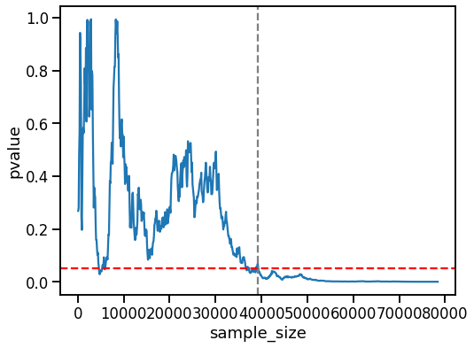

The law of the iterated logarithm¶
[1]:
import numpy as np
import pandas as pd
from scipy import stats
from statsmodels.stats.power import TTestIndPower
import seaborn as sns
import matplotlib.pyplot as plt
from tqdm.auto import trange
[2]:
sns.set_context('talk')
Introduction¶
Significant p-values can be reached for similar distributions with large enough sample size
[3]:
sample_size = 100
effect_size = .1
stdev = 5
np.random.seed(42)
[4]:
population_dist1 = stats.norm(loc=10, scale=stdev)
population_dist2 = stats.norm(loc=10 + effect_size, scale=stdev)
Power calculation¶
[5]:
needed_samplesize = TTestIndPower().solve_power(
effect_size=effect_size / stdev,
#nobs1=100, ratio=1,
alpha=.05, power=.8
)
needed_samplesize
[5]:
39245.263510769844
Data generation¶
[6]:
sample1 = []
sample2 = []
data = []
iter_num = int(needed_samplesize // sample_size) * 2
for i in trange(iter_num):
tmp = population_dist1.rvs(size=sample_size)
sample1 = np.r_[sample1, tmp]
tmp = population_dist2.rvs(size=sample_size)
sample2 = np.r_[sample2, tmp]
_, pvalue = stats.ttest_ind(sample1, sample2)
data.append({
'sample_size': sample1.size,
'pvalue': pvalue
})
df = pd.DataFrame(data)
df.head()
[6]:
| sample_size | pvalue | |
|---|---|---|
| 0 | 100 | 0.268430 |
| 1 | 200 | 0.279391 |
| 2 | 300 | 0.479010 |
| 3 | 400 | 0.569172 |
| 4 | 500 | 0.942742 |
Investigate result¶
[7]:
plt.figure(figsize=(8, 6))
sns.lineplot(x='sample_size', y='pvalue', data=df)
plt.axvline(needed_samplesize, color='grey', ls='dashed')
plt.axhline(.05, color='red', ls='dashed')
[7]:
<matplotlib.lines.Line2D at 0x12482f990>

Consequently, looking at the p-value alone is not sufficient. The effect size is also relevant to the final interpretation.
Additionally, calculating the statistical power before performing the experiment is useful to find out how many samples are required to reach the specified confidence.
Beta: prob of type ii error (incorrectly fail to reject null)Power of test: 1 - betaChance of rejecting null in favor of alternative, if latte rid true. Or: chance that it will correctly detect a real effect.